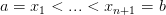

9.2 Regras compostas
Vimos que em todas as estimativas de erro que derivamos, o erro depende do tamanho do intervalo de integração. Uma estratégia para reduzir o erro consiste em particionar o intervalo de integração em diversos subintervalos menores tal que
 |
onde , sendo  o número de subintervalos da
partição do intervalo de integração. No caso uniforme
o número de subintervalos da
partição do intervalo de integração. No caso uniforme  ,
,
 .
.
Depois, aplica-se um método simples de integração em cada subintervalo,
9.2.1 Método composto dos trapézios
A regra composta dos trapézios assume a seguinte forma:
 , temos:
, temos:
9.2.2 Método composto de Simpson
Já a regra composta de Simpson assume a seguinte forma:
 ,
,  e
e  ,
sendo
,
sendo  o número de subintervalos da partição do intervalo de integração.
Podemos simplificar o somatório acima, escrevendo:
o número de subintervalos da partição do intervalo de integração.
Podemos simplificar o somatório acima, escrevendo:
![[ ]
∫ b h- n∑- 1 ∑n 5
a f(x)dx ≈ 3 f(x1) + 2 f(x2i+1) + 4 f(x2i) + f(x2n+1) + O (h )
i=1 i=1](main3614x.png) |
onde, agora,  ,
,  ,
,  .
.
Exemplo 9.2.1. Calcule numericamente a integral

 .
.
Solução.
 |

Exercícios
Em construção ... Gostaria de colaborar na escrita deste livro? Veja como em:
* As versões do livro disponíveis no site podem estar desatualizadas, veja a versão PDF atual no repositório GitHub oficial do projeto.
- IME - UFRGS